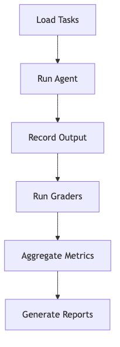

Using LLM-as-a-Judge For Evaluation: A Complete Guide¶
"The solution is Critique Shadowing: aligning evaluation with domain expertise to avoid drowning in unactionable metrics." - Hamel Husain
The Problem: AI Teams Are Drowning in Data¶
Teams often build AI systems without a clear evaluation strategy, leading to:
- Overloaded dashboards with arbitrary 1–5 scales that lack calibration
- Unvalidated metrics that don't reflect real-world user needs
- Lack of domain alignment, resulting in systems that fail to meet business goals
The result? Teams waste time on metrics that don't matter, while critical failure modes go undetected. Build an AI Evals Dataset from Scratch explains how to avoid this trap.
Step 1: Find The Principal Domain Expert¶
Identify the Principal Domain Expert (PDE) - the individual whose judgment defines success for your AI product. This could be:
- A psychologist for a mental health chatbot
- A customer service director for a support agent
- A curriculum developer for an educational tool
Why PDEs Matter¶
- They define what "good" looks like in your domain
- They uncover unspoken user expectations
- They ensure evaluations align with business outcomes
Tip: Involve PDEs early and keep their input focused. Use How to Design Evaluators That Catch What Actually Breaks to streamline their feedback.
Step 2: Create a Dataset¶
With your PDE on board, build a dataset that captures real-world failure modes. Focus on diversity and relevance.
Key Dimensions for Structuring Your Dataset¶
| Feature | Scenario | Persona |
|---|---|---|
| Email summarization | Multiple matches found | Non-native speaker |
| Meeting scheduling | Ambiguous request | Busy professional |
| Order tracking | No matches found | Elderly user |
Example Dataset Entry¶
{
"input": "Where is my order #123?",
"expected_output": "Order #123 is being shipped and will arrive by Friday.",
"actual_output": "We found three orders with similar numbers. Could you clarify?",
"error_type": "Ambiguous response",
"severity": "Medium"
}
Tip: Use Unit evals to automate synthetic data generation for edge cases.
Step 3: Implement Critique Shadowing¶
Critique Shadowing is the process of aligning LLM judges with human expertise:
- Train judges using labeled data from your PDE
- Validate judges by comparing their scores to human labels
- Iterate based on error analysis and feedback
Example Judge Prompt¶
You are a customer service expert. Score the agent's response on a binary scale: 1 if it resolves the user's issue, 0 otherwise.
Step 4: Build an Evaluation Harness¶
Automate testing with an evaluation harness that:
- Loads tasks from your dataset
- Runs agents in parallel
- Executes custom evaluators
- Aggregates results and generates reports

Tip: Use platforms like Validation Protocol or Opik for scalable implementation.
Avoiding Common Pitfalls¶
| Mistake | Solution |
|---|---|
| Too many metrics | Focus on 2–3 key business outcomes |
| Uncalibrated scales | Use binary scoring (pass/fail) |
| Ignoring PDEs | Involve them in every stage |
| Unvalidated metrics | Align with Binary vs Likert principles |
Conclusion¶
LLM-as-judge evaluations are powerful - but only when aligned with domain expertise and business goals. By following Critique Shadowing and building a dataset-driven evaluation system, teams can avoid the trap of "vibe checks" and focus on what truly matters. Start small, iterate, and let the data guide you.